tuffgit21
@tuffgit21 · Youssef
Memorable developer positioning.
Tech enthusiast from Lebanon — Python, C, Web. I build small tools, learn Linux & systems, and ship in public since 2026.
ASCII art — wordmark & portrait.sh


About
Hey, I'm Youssef! I like to understand how computers work — experimenting late-night with Linux and building tools people actually use.
- Based: Lebanon
- Focus: Web · Systems · ML
- Now: Ledger v2, PyShell, Debian App Builder
Skills
PythonCJavaScriptHTMLCSSLinuxGitDebian
Projects
- PyShell — Bash-like shell in Python
- Debian App Builder — make .deb on WSL/Debian
- LightCalc — lightweight calculator
- PassGen — GUI & CLI password generator